Island order
Isola Bella is the palace-and-garden showpiece; Isola dei Pescatori is the best contrast for lunch and village atmosphere.
Two nights in Stresa, centered on the Borromean Islands, lakeside gardens and a relaxed final evening before Malpensa.
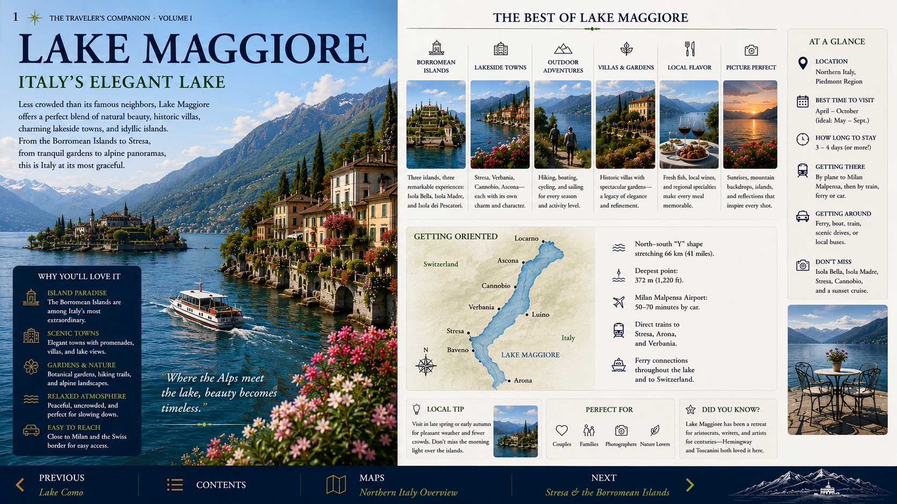
Keep the final stop graceful and unhurried; this is the trip’s decompression chapter.
Start with the island you care about most, then add a second only if ferry timing and energy remain comfortable.
Leave room for Stresa’s lakefront, a drink, and repacking rather than filling every hour.
Fuel, organize toll payment, confirm the rental return, and stage luggage before dinner.
Isola Bella is the palace-and-garden showpiece; Isola dei Pescatori is the best contrast for lunch and village atmosphere.
Choose Mottarone only with clear visibility. In haze or rain, spend the time on the lake or in Stresa instead.
Allow a large buffer for weekday traffic, fuel and rental-car return. The final morning should contain no sightseeing commitments.
Walk the promenade at blue hour, eat near the hotel, and protect sleep before the Malpensa departure.
Use arrival day for Stresa and the promenade. Give the full day to the Borromean Islands without packing in unnecessary detours.
It combines easy island access, a handsome promenade, broad lake views and a practical final-night position for Malpensa.
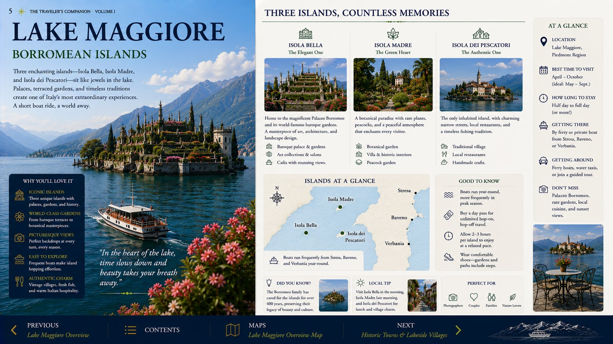
Use the waterfront as the chapter's calm center—ideal for arrival afternoon and the final evening.

Choose atmosphere and convenience over another complicated transfer. This evening should feel like a conclusion.
Visit in a practical sequence and keep the ferry timetable visible throughout the day.
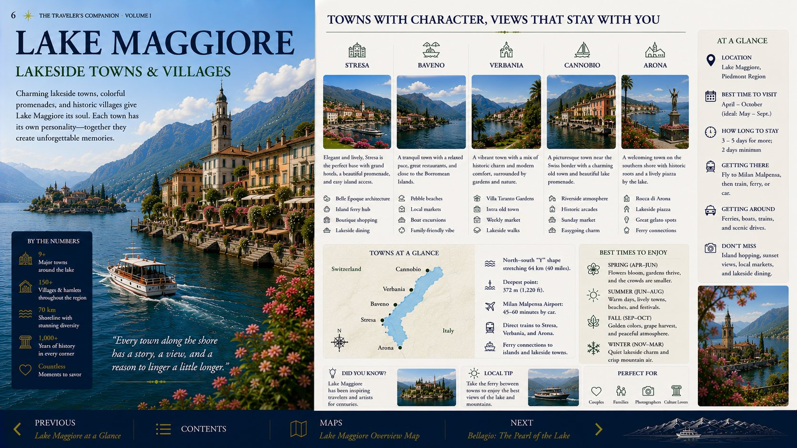
Palace, terraces and the most theatrical gardens. The essential first stop.
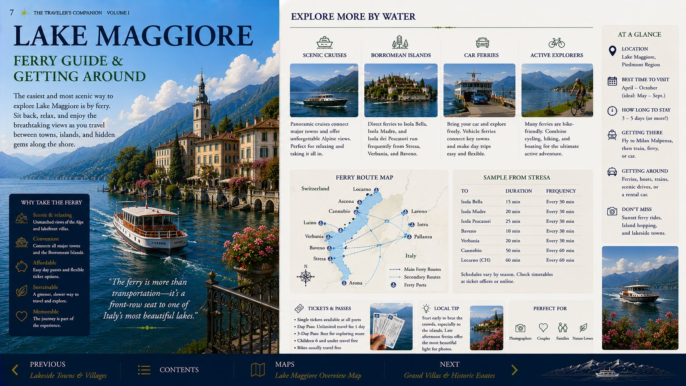
The best lunch stop and the most village-like island atmosphere.
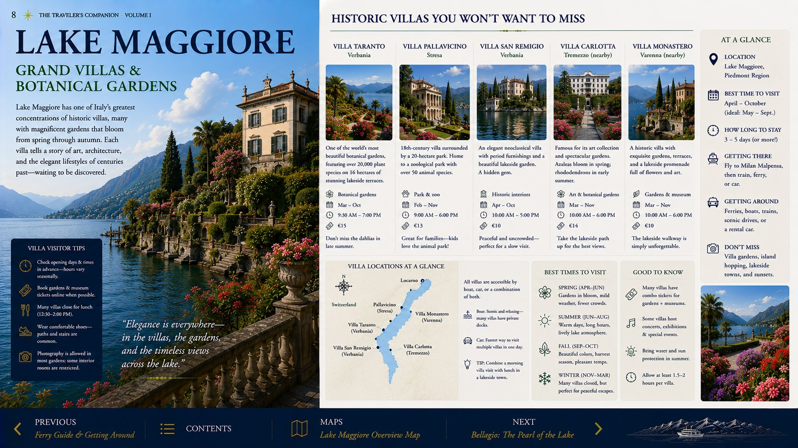
Quieter gardens and more breathing room—an excellent final island.
Protect the airport morning. Pack the night before, confirm the rental-car return location and leave enough margin for traffic and refueling.
Tap any spread to enlarge it.
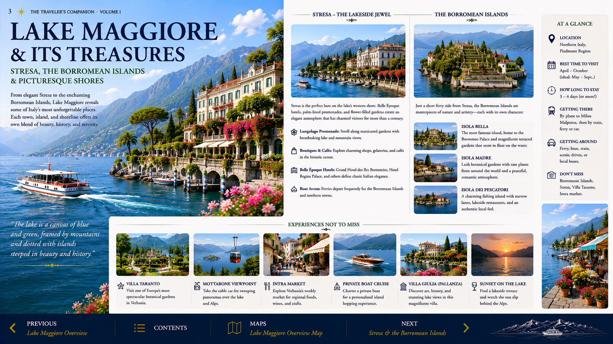
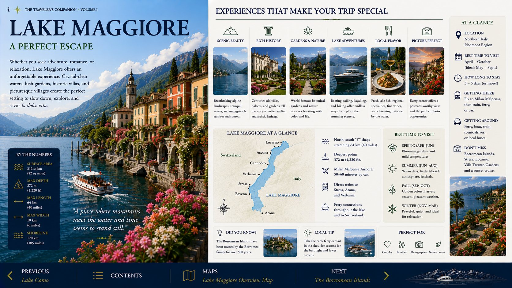
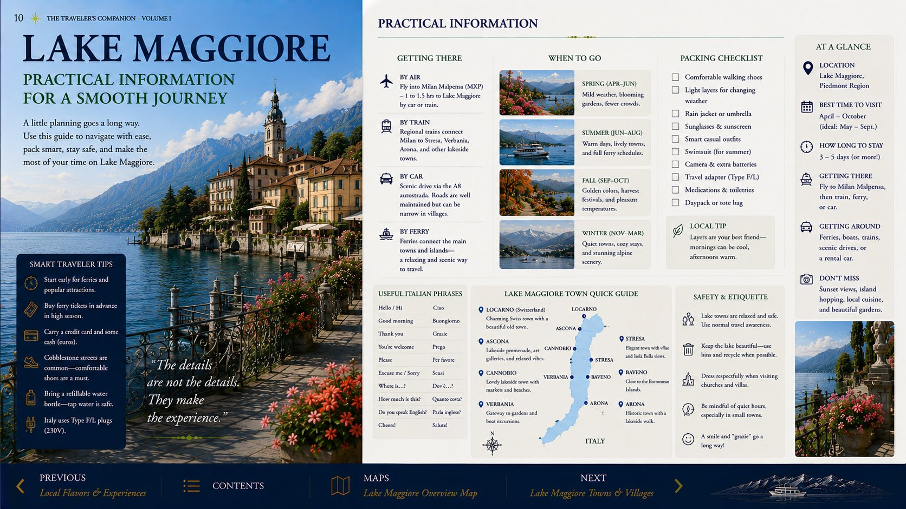
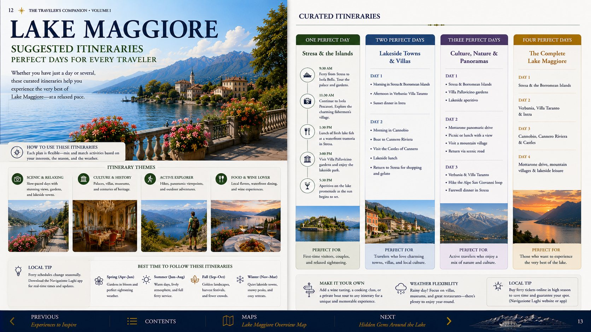
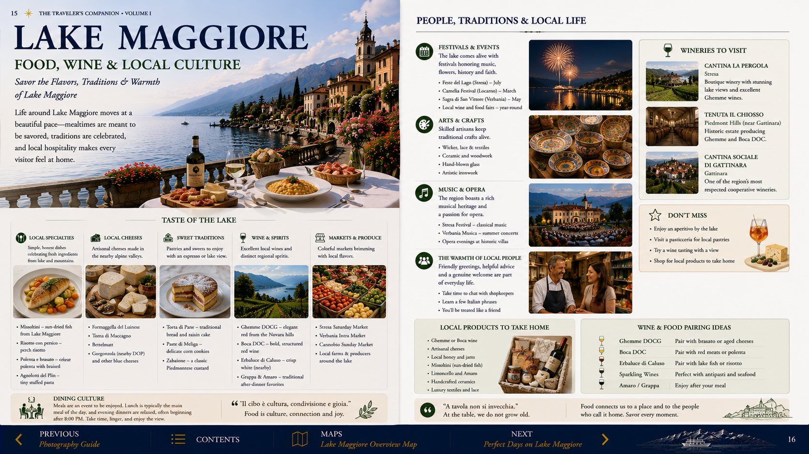
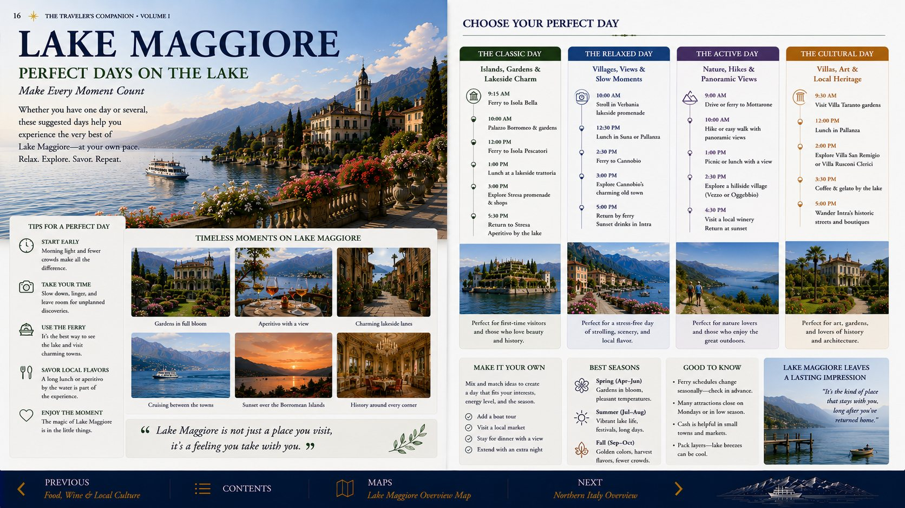